소방설비산업기사(전기) (2003-05-25 기출문제)
1과목: 소방원론
1. 소화기의 설치 장소로 적당하지 않은 곳은?
- 통행 또는 피난에 지장을 주지 않는 장소
- 사용시 반출이 용이한 장소
- 장난의 방지를 위하여 사람들의 눈에 띄지 않는 장소
- 위험물 등 각 부분으로부터 규정된 거리이내의 장소
(정답률: 93%)

2. 인화점에 대한 설명으로 틀린 것은?
- 가연성 액체의 발화와 깊은 관계가 있다.
- 반드시 점화원의 존재와 연관된다.
- 연소가 지속적으로 확산될 수 있는 최저온도이다.
- 연료의 조성, 점도, 비중에 따라 달라진다.
(정답률: 56%)
3. 물의 증발잠열은 소화에서 중요한 역할을 한다. 100℃에서의 증발잠열은 몇 cal/g 인가?
- 79
- 539
- 650
- 710
(정답률: 87%)
4. 방화재료의 구분이 잘못된 것은?
- 불연재료-철판
- 불연재료-석면 슬레이트
- 준불연재료-목모,시멘트판
- 준불연재료-유리
(정답률: 55%)
5. 점화원이 될수 없는 것은?
- 단열압축
- 대기압
- 정전기불꽃
- 전기 불꽃
(정답률: 82%)
6. 내열용 비닐 절연전선의 약호는?
- MI
- IV
- CV
- HIV
(정답률: 59%)
7. 불타고 있는 유류화재 표면을 포말로 덮어 소화하는 주된 소화법은?
- 냉각소화
- 질식소화
- 연료제거 소화
- 연쇄반응차단 소화
(정답률: 86%)
8. 인체에 영향을 미치는 연소 생성물이 아닌 것은?
- 시안계 물질
- 염화수소계 물질
- 황화수소
- 2황화탄소
(정답률: 40%)
9. 후레쉬 오버의 시점은 피난 허용시간을 정하는 가장 중요한 요건으로 작용한다. 후레쉬 오버시점까지의 시간에 영향을 주는 요인이 아닌 것은?
- 내장재료의 제 성상
- 화원의 크기
- 벽면적에 대한 개구부 면적의 비
- 실내의 전면적에 대한 벽면적의 비와 공기에 접하는 표면적의 비
(정답률: 52%)
10. 목재를 가열할 때 가열온도 160∼360℃에서 많이 발생되는 기체는?
- 일산화탄소
- 수소가스
- 아세틸렌가스
- 유화수소가스
(정답률: 75%)
11. 건축물의 구조는 화재 예방상 중요하다.건축물의 주요 구조부에 해당되지 않는 것은?
- 지붕
- 기둥
- 작은보
- 주계단
(정답률: 79%)
12. 내화 건축물의 화재진행 과정으로 가장 적당한 것은?
- 화원-발화-성장기-감쇠기
- 화원-성기-감쇠기
- 화원-발화-성장기-성기-감쇠기
- 화원-발화-성장기-소화
(정답률: 72%)
13. 가연성가스가 아닌 것은?
- 수소
- 염소
- 암모니아
- 메탄
(정답률: 55%)
14. 고분자 물질중 L.O.I(산소지수)값이 가장 큰 것은?
- 폴리에틸렌
- 폴리프로필렌
- 폴리스틸렌
- 폴리염화비닐
(정답률: 59%)
15. 가연물의 연소성에 해당하지 않은 것은?
- 폭연성 및 인화성
- 인화성 및 훈소성
- 이연성 및 난연성
- 난연성 및 불연성
(정답률: 62%)
16. 다음 설명중 틀린 것은?
- 피난시설의 안전구획을 설정할 때 계단은 해당되지 않는다.
- 방화구획에는 수평구획, 수직구획, 용도구획이 있다.
- 계단은 제3차 안전구획에 속한다.
- 건축방재를 위한 공간적 대응은 도피성 대응, 회피성 대응, 대항성 대응이 있다.
(정답률: 75%)
17. 우리나라에서 발생되는 화재원인 중 가장 많이 차지하는 것은?
- 불장난
- 가스
- 담배불
- 전기
(정답률: 52%)
18. 목조건축물의 화재시 일정 시간이 지난 후 급격하게 실내의 온도가 상승하며 나타나는 현상은?
- SLOP-OVER
- FROTH-OVER
- BOIL-OVER
- FLASH-OVER
(정답률: 73%)
19. 습식 스프링클러 소화설비에서 비화재시 유수경보밸브에 의한 오동작를 방지하기 위한 안전장치로서 경보용 압력 스위치에 대한 수압의 작용시간을 지연시켜주는 것은?
- 안전밸브
- 압력스위치
- 알람밸브
- 리타팅 체임버
(정답률: 44%)
20. 다음 설명이 잘못된 것은?
- 인화점은 낮을수록 위험
- 발화점은 높을수록 위험
- 산소농도는 높을수록 위험
- 연소의 하한계는 낮을수록 위험
(정답률: 66%)
2과목: 소방전기회로
21. 부궤환증폭기의 장점에 해당되는 것은?
- 전력이 절약된다.
- 능률이 증대된다.
- 안정도가 증가한다.
- 증폭도가 증가한다.
(정답률: 40%)
22. 도전상태에 있는 SCR을 차단상태로 하기 위한 방법으로 적당한 것은?
- 게이트 전류를 차단시켜준다.
- 게이트에 역방향 바이어스를 인가해 준다.
- 양극전압을 더 높게 올려준다.
- 양극전압을 음으로 한다.
(정답률: 18%)
23. 트랜지스터를 증폭작용에 이용할 때 베이스-이미터간의 바이어스 전압은?
- 순방향 전압을 인가한다.
- 역방항 전압을 인가한다.
- 순방향, 역방향 어느 것이나 관계 없다.
- 이미터와 컬렉터를 단락시킨다.
(정답률: 48%)
24. 그림과 같은 회로에서 단자 ad사이에 전압 300[V]를 가할 때 ab 사이의 전압은 몇[V]인가?
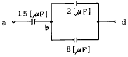
- 120
- 150
- 180
- 210
(정답률: 32%)
25. 온도, 유량, 압력 등의 공업프로세스 상태량을 제어량으로 하는 제어계로서 프로세스에 가해지는 외란의 억제를 주된 목적으로 하는 것은?
- 서보기구
- 자동제어
- 정치제어
- 프로세스제어
(정답률: 74%)
26. 그림의 유접점회로를 논리식으로 표시하면?
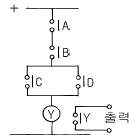
- ABCD=Y
- (A+B)CD=Y
- A+B+CD=Y
- AB(C+D)=Y
(정답률: 57%)
27. 지시계기의 흔들림 읽기를 취하는 측정법을 무엇이라고 하는가?
- 편위법
- 영위법
- 보상법
- 치환법
(정답률: 48%)
28. 배선의 절연저항은 어떤 측정기를 사용하여 측정하는가?
- 전압계(Votmeter)
- 전류계(Ammeter)
- 메가(Megger)
- 써미스터(Thermistor)
(정답률: 63%)
29. 회로에서 전류 Ｉ1을 구하는 식은?
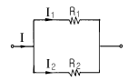
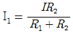
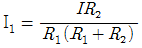
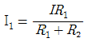
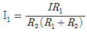
(정답률: 59%)
30. 기전력이 1.5[V]이고, 내부저항이 0.5[Ω]인 전지를 2.5[Ω]의 저항에 연결하였다. 전지 양단의 단자전압은 몇[V] 인가?
- 0
- 0.25
- 1.25
- 1.5
(정답률: 43%)
31. 열전현상에 있어 온도차가 있는 어떤 도체의 두점 사이에 전류가 흐르면 열의 발생 또는 흡수가 일어나는 현상을 무슨 효과라 하는가?
- Thomson 효과
- Seebeck 효과
- Peltier 효과
- Ampere 효과
(정답률: 52%)
32. 그림과 같이 정류회로에서 v=35
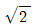
sinωt[V]일 때 부하R에 걸리는 전압의 평균치는 몇[V] 인가? (단, 정류소자의 전압강하는 무시한다.)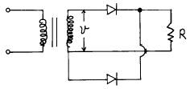
- 30.2
- 31.5
- 33.7
- 35.8
(정답률: 55%)
33. 100[V]의 전위차가 있는 곳에 50[A]의 전류가 6분간 흘렀을 때 전력량은 몇[J] 인가?
- 18 × 105
- 18 × 104
- 18 × 103
- 18 × 102
(정답률: 62%)
34. 변위를 전압으로 변환할 수 있는 장치는?
- 차동변압기
- 서머스터
- 노즐플래퍼
- 벨로우즈
(정답률: 67%)
35. 전기기계의 철심을 규소강판으로 성층한다. 가장 주된 이유는?
- 히스테리시스손의 감소
- 와류손의 감소
- 동손의 감소
- 철손의 감소
(정답률: 54%)
36. 정전용량 C[F]의 콘덴서에 W[J]의 에너지를 축적하려면 인가전압은 몇[V] 인가?
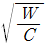
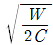
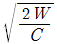
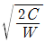
(정답률: 41%)
37. 고주파 증폭회로에서 중화(neutralization)를 행하는 목적은?
- 능률의 향상
- 출력의 증대
- 주파수의 안정
- 자기발진의 방지
(정답률: 19%)
38. 분기회로의 종류가 아닌 것은?
- 10A 분기회로
- 15A 분기회로
- 30A 분기회로
- 50A 분기회로
(정답률: 36%)
39. R=40[Ω], L=80[mH]의 코일에 60[Hz], 200[V]의 전압을 가하면 소비전력은 몇[W] 인가?
- 160
- 640
- 1000
- 4000
(정답률: 44%)
40. 그림과 같은 회로에서 다이오드 양단의 전압 VD는 몇[V] 인가? (단, 이상적인 다이오드이다.)
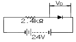
- 0
- 2.4
- 10
- 24
(정답률: 53%)
3과목: 소방관계법규
41. 소방설비기사의 책무를 설명한 것이 아닌 것은?
- 소방시설공사를 적법하게 시공관리하여야 한다.
- 동시에 2이상의 사업체에 취업하여서는 안된다.
- 자격구분에 따른 시설 이외의 설비는 하지 않는다.
- 소방설비기사는 시공전 착공신고를 하여야 한다.
(정답률: 53%)
42. 불을 사용하는 설비의 관리와 불의 사용에 관하여 화재예방상 지켜야 할 사항은?
- 한국소방안전협회의 안전관리규정으로 정한다.
- 방화관리자가 정하여 관리한다.
- 소유자 또는 사용자의 사용지침으로 정한다.
- 시·도의 조례로 정한다.
(정답률: 43%)
43. 간이소화용구에 속하지 않은 것은?
- 팽창질석 또는 팽창진주암
- 마른 모래
- 소화수통
- 소화약제에 의한 간이소화용구
(정답률: 48%)
44. 경보설비가 아닌 것은?
- 비상콘센트설비
- 자동화재탐지설비
- 자동화재속보설비
- 누전경보기
(정답률: 87%)
45. 소방용수시설의 수원의 기준으로 옳은 것은?
- 공업지역에 있어서의 저수조의 저수량은 100m3 이상
- 상업지역에 있어서의 저수조의 저수량은 40m3 이상
- 공업지역에 있어서의 소화전의 토출량은 1.1m3 이상
- 상업지역에 있어서의 급수탑의 토출량은 1.1m3 이상
(정답률: 48%)
46. 특수장소의 소방대상물에 대한 방화관리업무를 행하게 하기 위하여 선임된 방화관리자의 업무내용으로 틀린것은?
- 자위소방대의 조직
- 화기취급의 감독
- 소방계획의 작성
- 소방시설의 설치 및 유지관리
(정답률: 42%)
47. 소방용수시설의 수원은 지면으로부터의 낙차가 몇 m 이하이어야 하는가?
- 3
- 4.5
- 6
- 7.5
(정답률: 73%)
48. 소방시설공사업의 등록을 하고자 하는 사람이 갖추어야 할 사항이 아닌 것은?
- 영업능력 및 공사실적
- 자본금
- 시설 및 장비
- 기술능력
(정답률: 56%)
49. 다음중 옥내저장소로 벽·기둥 및 바닥이 내화구조로 된 건축물에 지정수량의 5배이상 20배미만 저장 또는 취급할 때 보유해야 할 공지의 너비는?
- 1m 이상
- 3m 이상
- 5m 이상
- 10m 이상
(정답률: 21%)
50. 특수장소의 2급 방화관리대상물에 방화관리자로 선임될 수 있는 조건이 아닌 것은?
- 전문대학이상의 교육기관에서 소방안전관리학과를 전공하고 졸업한 사람
- 소방공무원으로 1년이상 근무한 경력이 있는 사람
- 광산보안기사 자격을 가진 사람으로서 보안감독자로 선임된 사람
- 경찰공무원으로 5년이상 근무한 경력이 있는 사람
(정답률: 37%)
51. 위험물제조소의 보기 쉬운 곳에는 방화에 관한 필요사항을 게시판으로 설치하여야 한다. 잘못된 것은?
- 게시판은 가로 0.8미터 이상
- 게시판은 세로 0.3미터 이상
- 게시판의 바탕은 백색으로, 문자는 흑색으로 하였다.
- 게시판에는 취급하는 위험물의 유별, 품명 및 취급 최대수량과 위험물안전관리자의 성명을 기재할 것
(정답률: 40%)
52. 도시의 건물 밀집지대로 화재발생의 우려가 많거나 화재로 인한 피해가 많을 것으로 예상되는 일정 구역을 화재 경계지구로 지정할 수 있는 자는?
- 소방서장
- 시·도지사
- 소방안전협회장
- 행정자치부장관
(정답률: 82%)
53. 주유취급소의 건축물등 에서 설치하여서는 아니되는 시설은?
- 노래방
- 전시장
- 휴게음식점
- 점포
(정답률: 48%)
54. 제1석유류는 아세톤 및 휘발유 그밖의 액체로서 인화점이 섭씨 몇도 미만인 것인가?
- 15
- 18
- 21
- 25
(정답률: 50%)
55. 소방관서에 설치하는 구급대의 편성,운영 등에 관한 사항으로 옳지 않은 것은?
- 소방서장은 구급업무 수행상 필요한 경우에 군이나 경찰서에 협조를 요청할 수 있다.
- 소방서장의 구급업무 협조요청에 대해 의료기관은 정당한 사유가 없는 한 이에 응하여야 한다.
- 소방서장은 구급업무에 필요하면 구급현장에 있는 사람에게 협력을 요청 할수 있다.
- 의료법에 의하여 간호조무사의 자격을 받은 사람은 구급대원이 될 수 있다.
(정답률: 32%)
56. 이동탱크 저장소의 탱크에서 방파판은 하나의 구획부분에 몇 개 이상의 방파판을 이동탱크저장소의 진행방향과 평행으로 설치 하여야 하는가?
- 1개
- 2개
- 3개
- 4개
(정답률: 52%)
57. 피난설비에서 피난기구는 소방대상물의 피난층 2층 및 층수가 몇층 이상인 층을 제외한 모든층에 설치하여야 하는 가?
- 5층
- 8층
- 10층
- 11층
(정답률: 69%)
58. 소방신호의 목적이 아닌 것은?
- 화재예방
- 소화활동
- 소방훈련
- 화생방신호
(정답률: 74%)
59. 소량 위험물의 취급에서 소량 위험물로 판단하는 가장 기본적인 기준은?
- 지정수량미만의 위험물
- 지정수량 10배미만의 위험물
- 지정수량의 1/5∼5배의 위험물
- 지정수량의 1/5∼10배의 위험물
(정답률: 42%)
60. 형식승인을 얻어야 할 소방용 기계기구 등에 해당되는 것은?
- 화학반응식거품소화기
- 화학반응식거품소화약제
- 이산화탄소소화약제
- 방열복
(정답률: 44%)
4과목: 소방전기시설의 구조 및 원리
61. 비상콘센트설비의 비상전원의 종류를 열거한 것이다. 옳은 것은?
- 자가발전설비 또는 비상전원수전설비
- 자가발전설비 또는 축전지설비
- 비상전원수전설비 또는 축전지설비
- 자가발전설비 또는 축전지설비 또는 비상전원수전설비
(정답률: 32%)
62. 자동화재 탐지설비의 감지기의 높이가 8[m]이상의 장소에 설치할수 있는 감지기는?
- 보상식 스폿트형
- 정온식 스폿트형
- 차동식 분포형
- 차동식 스폿트형
(정답률: 34%)
63. 자동화재탐지설비의 예비전원으로 축전지설비를 설치한 경우 옳은 것은?
- 감시상태를 20분간 지속한 후 유효하게 10분이상 경보 할 수 있어야 한다.
- 감시상태를 20분간 지속한 후 유효하게 20분이상 경보 할 수 있어야 한다.
- 감시상태를 60분간 지속한 후 유효하게 10분이상 경보 할 수 있어야 한다.
- 감시상태를 60분간 지속한 후 유효하게 20분이상 경보 할 수 있어야 한다.
(정답률: 58%)
64. 유도등의 설치기준에 대한 설명으로 옳은 것은?
- 피난구 유도등은 피난구의 바닥으로부터 높이 2[m]이상의 곳에 설치해야 한다.
- 피난구 유도등의 조명도는 피난구로부터 30[m] 의 거리에서 문자 및 색채를 쉽게 식별할 수 있어야 한다.
- 통로유도등은 바닥으로 부터 높이 1.5[m]이하 의 위치에 설치해야 한다.
- 객석유도등의 조명도는 통로바닥의 중심선에서 측정하여 1.0룩스 이상이어야 한다.
(정답률: 31%)
65. 가스누설경보기에서 분리형으로서 영업용인 것의 회로수는?
- 1
- 2
- 3
- 5
(정답률: 26%)
66. 복도나 계단, 경사로, 승강기 통로 등의 장소에는 어떤 감지기를 설치하는 것이 가장 좋은가?
- 차동식분포형감지기
- 광전식감지기
- 연기감지기
- 이온화식감지기
(정답률: 50%)
67. 무선통신보조설비에서 무선기기 접속단자의 설치방법으로 틀린 것은?
- 단자는 규격에 적합한 것으로 하고 바닥으로부터 0.8m이상 1.5m이하의 위치에 설치하였다.
- 지상에 설치하는 접속단자는 다른 용도로 사용되는 접속단자에서 3m이상의 거리를 유지하였다.
- 상시 사람이 근무하고 있는 장소에 설치하였다.
- 지상에 설치하는 단자를 보호하기 위하여 함부로 개폐할 수 없는 구조의 보호함을 설치하였다.
(정답률: 31%)
68. 연축전지가 방전하면 양극물질 P 와 음극물질 N 은 어떻게 변화하는가?
- P:과산화납, N:납
- P:황산납, N:납
- P:과산화납, N:황산납
- P:황산납, N:황산납
(정답률: 31%)
69. 자동화재탐지설비의 감지기 작동과 연동해서 작동시키지 않아도 되는 소화설비는?
- 분말소화설비
- 이동식포말소화설비
- 물분무소화설비
- 개방형 헤드를 설치한 스프링클러설비
(정답률: 42%)
70. 누전경보기구의 정격전압이 몇 V 이상이면 접지단자를 설치 하여야 하는가?
- 60
- 100
- 200
- 300
(정답률: 44%)
71. 옥내소화전설비의 비상전원의 설치기준에 대한 설명으로 틀린 것은?
- 비상전원은 당해 옥내소화전설비를 유효하게 10분 이상 작동할 수 있는 용량의 것으로 할 것
- 상용전원이 정전된 경우 자동적으로 비상전원으로 전환되는 것으로 할 것
- 비상전원을 설치하는 장소에는 점검 및 조작에 필요한 조명설비와 비상전원의 표시를 할 것
- 비상전원전용수전설비는 다른 전기회로 등의 개폐기 또는 차단기에 의하여 차단되지 아니하도록 할 것
(정답률: 57%)
72. 계단통로유도등의 광원으로 사용하는 백열전구의 내부구성품 중 몰리브덴을 사용하는 부분은?
- 필라멘트
- 내부도입선
- 외부도입선
- 지지선(support wire)
(정답률: 41%)
73. 스위치 작동시 발신기 고유신호를 소방관서에 전달하는 발신기는 무슨형 발신기인가?
- P형 발신기
- R형 발신기
- A형 발신기
- M형 발신기
(정답률: 27%)
74. 누전경보기의 변류기는 소방대상물의 형태, 인입선의 시설방법 등에 따라 어디에 설치하는가?
- 옥외 인입선의 제1지점의 전원측 또는 제1종 접지선측의 점검이 쉬운 위치에 설치
- 옥외 인입선의 제1지점의 부하측 또는 제1종 접지선측의 점검이 쉬운 위치에 설치
- 옥외 인입선의 제1지점의 전원측 또는 제2종 접지선측의 점검이 쉬운 위치에 설치
- 옥외 인입선의 제1지점의 부하측 또는 제2종 접지선측의 점검이 쉬운 위치에 설치
(정답률: 30%)
75. 이온화식 연기감지기는 벽 또는 보로부터 몇 m 이상 떨어진 곳에 설치하여야 하는가?
- 0.3
- 0.4
- 0.5
- 0.6
(정답률: 48%)
76. 감지기 설치시의 배선기호에서 공통선은 어떤 기호로 표시하는가?
- A
- T
- C
- N
(정답률: 40%)
77. 변류기가 1개일 경우 누전경보기의 주요 구성요소는?
- 변류기, 수신기, 전원장치, 증폭기
- 변류기, 수신기, 음향장치, 차단기구
- 수신기, 감지기, 전원장치, 변류기
- 변류기, 증폭기, 차단장치, 수신기
(정답률: 47%)
78. 비상콘센트설비의 전원회로 기준으로 옳은 것은?
- 2상교류 220볼트로서 2[KVA]이상
- 단상교류 100볼트로서 1[KVA]이상
- 3상교류 200볼트로서 3[KVA]이상
- 단상교류 380볼트로서 3[KVA]이상
(정답률: 41%)
79. 축전지설비의 구성요소로 맞지 않는 것은?
- 축전지
- 충전장치
- 역변환장치
- 방전장치
(정답률: 49%)
80. P형 2급 수신기와 관련이 없는 사항은?
- 접속되는 회선수가 5회로 이하이다.
- 예비전원 양부시험장치가 있다.
- 화재 표시 작동시험 장치가 있다.
- 외부 배선의 도통시험 장치가 있다.
(정답률: 31%)